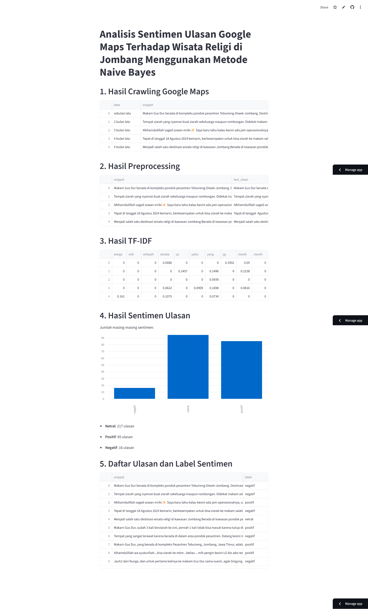

03 · Data
Analisis Sentimen Berita dari Web
Mengembangkan sistem analisis sentimen terhadap data berita melalui proses crawling, preprocessing, klasifikasi teks, dan penerapan machine learning untuk mengidentifikasi sentimen berdasarkan kategori berita.
Tentang Proyek
Proyek akademik ini berfokus pada crawling data berita dari website, kemudian mengolah dan mengklasifikasikan data menggunakan NLP dan machine learning berdasarkan kategori berita.
Teknologi yang Digunakan
Python
ML
Text Processing / NLP
Streamlit
Dokumentasi
